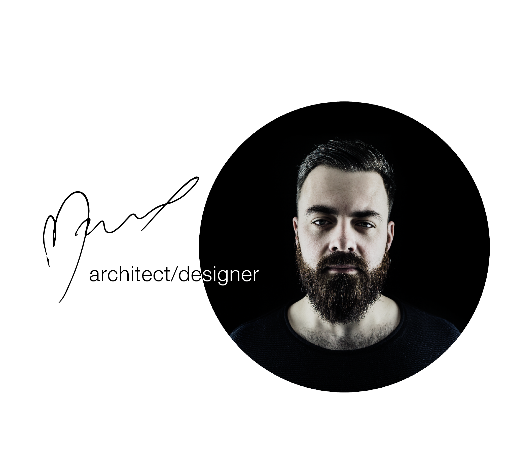

Moja pasją jest tworzenie w każdej możliwej formie. Wierzę w zrównoważone projektowanie i
nowoczesne technologie. Uważam, że każdy budynek może oddać otoczeniu więcej niż zabiera.
W projektach kładę nacisk nie tylko na warstwę wizualną, ale również jego oddziaływanie na
środowisko.
Doświadczenie zdobywałem w interdyscyplinarnych pracowniach. Członkostwo w
profesjonalnych zespołach i wkład w kompleksowe projekty dało mi to możliwość poznania
skrajnie różnych warsztatów pracy. Te doświadczenia napełniły mnie inspiracjami i
odpowiednimi umiejętnościami.
Skupiam się na detalach i staram się doprowadzać projekt jak najbliżej perfekcji, używając do
tego nowoczesnych technologii i materiałów. Zawsze szukam kreatywnych rozwiązań, które
sukcesywnie wdrażam w moich projektach.
Uważam, że celem projektowania jest przekraczanie granic postawionych przez poprzednie
pokolenia i urzeczywistnianie idei które kiedyś wydawały się nieosiągalne.
Zajmuję się szeroko pojętą branżą architektoniczno-budowlaną:
- projektowanie architektoniczne - stale polepszam swój warsztat i zbieram inspiracje by rozwijać się w wyuczonym kierunku architektury i urbanistyki. Mimo braku własnych autorskich projektów, mam na koncie wiele budynków projektowanych pod banderą dużych renomowanych biur architektonicznych, do obecnej chwili działam jednej z największych jednostek projektujących wielkie inwestycje osiedli zamieszkania zbiorowego. Czas wykazać się także na polu własnej działalności - zachęcam do współpracy.
- projektowanie wnętrz - pasja rozwijana jeszcze z przed podjęcia studiów inspirowana wieloletnim doświadczeniem członka rodziny w tej branży. Branża coraz popularniejsza w polsce i na świecie jest jedną z moich ulubionych. Duże doświadczenie zdobywałem pod okiem doświadczonych projektantów i mam na koncie wiele projektów zaczynając mieszkań na wynajem po duże inwestycje usługowe.
- projektowanie elewacji - rozbijając projektowanie na części pierwsze warto pamiętać, że często zdarza się, że sam wygląd zewnętrzny budynku zostawiamy na "lepsze czasy" - gdy taki przychodzi, służę pomocą, wykonałem wiele zrealizowanych projektów elewacji zarówno budynków nowych jak i starszych, potrzebują cych odświeżenia.
- projekty wnętrz + zmiana sposobu użytkowania - warto zaznaczyć, że każdy wykonywany projekt jest kompleksowy i zależnie od ustalonego zakresu, może w sobie zawierać wszelkie branże i uzgodnienia potrzebne dokonania wszelkich formalności.
- wizualizacje – wykonywanie wizualizacji foto realistycznych za pomocą oprogramowania Artlantis 6.5 + post produkcja.
- prowadzenie inwestycji "pod klucz" – obecnie czas jest towarem deficytowym, więc w celu ułatwienia inwestorom stworzenia swojego wymarzonego miejsca, inwestycja jest prowadzona do momentu w którym klient dostaje klucz do gotowego produtku.
- gotowe projekty - kiedy czas jest priorytetem, a w pełni indywidualne podejście nie jest pożądane, by odpowiedzieć na potrzeby klientów na stronie znajdują się gotowe do zakupu projekty wykończenia wnętrz, z ewentualną adaptacją do wybranego wnętrza. Ilość takich projektów będzie rosła w miarę apetytu.
- kompleksowość - nie trzeba daleko szukać, żeby znaleźć wszystko w jednym miejscu, kiedy istnieje potrzeba stworzenia nie tylko wyjątkowego budynku lub wnętrza, ale także innych składowych wizerunku firmy - prowadzę współpracę z wieloma utalentowanymi: artyststami, designerami, projektantami oświetlenia, automatyki budynkowej i firmami wykonawczymi. Taka współpraca sprawia, że projekt jest wykonany z dbałością o detale dzięki stałej koordynacji międzybranżowej.
Broncel & Rożniata © Copyright 2018. Design by Marcel Badetko